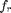
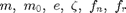
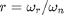
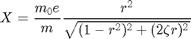

Contents
% Joel Lubinitsky % MAE 321 - HW9.1 % 03/25/15 clear all close all clc
Problem 1:
A lathe can be modeled as an electric motor mounted on a steel table. The table plus the motor have a mass of 60 kg. The rotating parts of the lathe have a mass of 5 kg at a distance 0.12 m from the center. The damping ratio of the system is measured to be = 0.07, and its natural frequency is 7 Hz. Calculate the amplitude of the steady-state displacement of the motor for lathe frequencies of  = 20, 25, 30, 35, 40 Hz.
Find: when = 20, 25, 30, 35, 40 Hz
Known

massT = 60; % kg massR = 5; % kg radiusR = 0.12; % m ratioDamping = 0.07; frequencyNaturalHz = 7; % Hz frequencyLathe = [20, 25, 30, 35, 40]; % Hz
Calculations


frequencyNaturalRad = frequencyNaturalHz .* 2 .* pi; frequencyLatheRad = frequencyLathe .* 2 .* pi; ratioFrequency = frequencyLatheRad ./ frequencyNaturalRad; amplitudeSS = (massR .* radiusR ./ massT) .* ((ratioFrequency .^ 2) ./ ... (sqrt((1 - ratioFrequency .^ 2) .^ 2 + ... (2 .* ratioDamping .* ratioFrequency) .^ 2)))
amplitudeSS =
0.0114 0.0108 0.0106 0.0104 0.0103
Results
The steady-state displacement amplitudes corresponding to the given lathe frequencies are:
0.0114 m @ 20 Hz
0.0108 m @ 25 Hz
0.0106 m @ 30 Hz
0.0104 m @ 35 Hz
0.0103 m @ 40 Hz